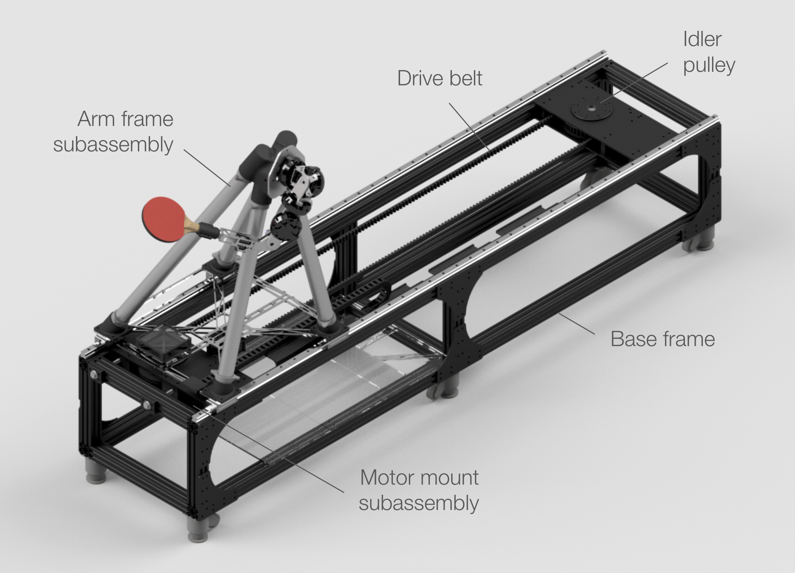
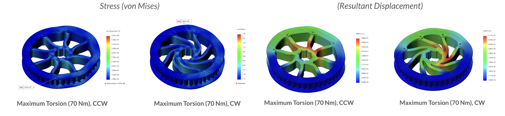
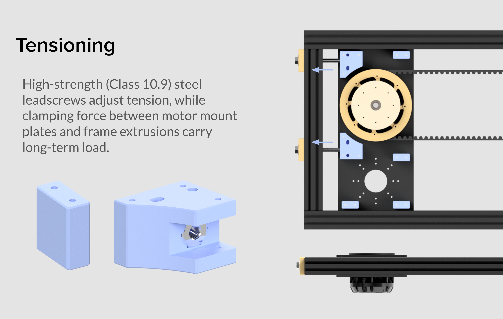
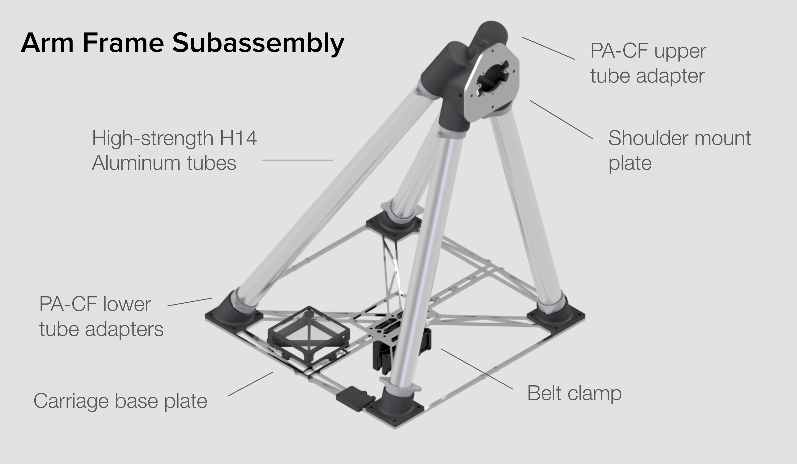
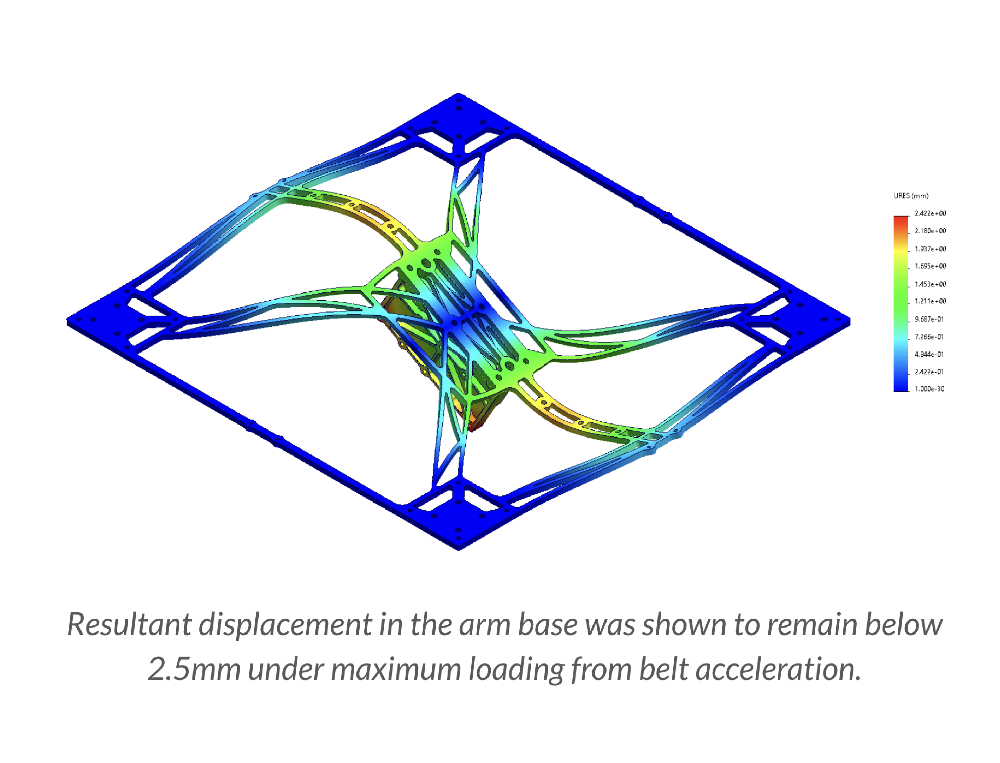
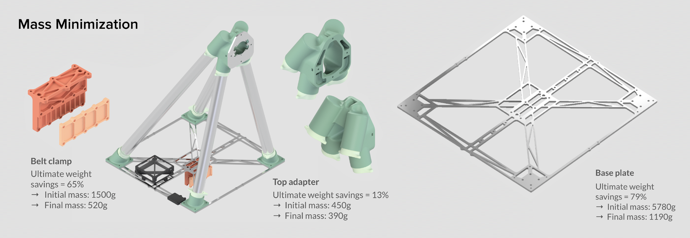
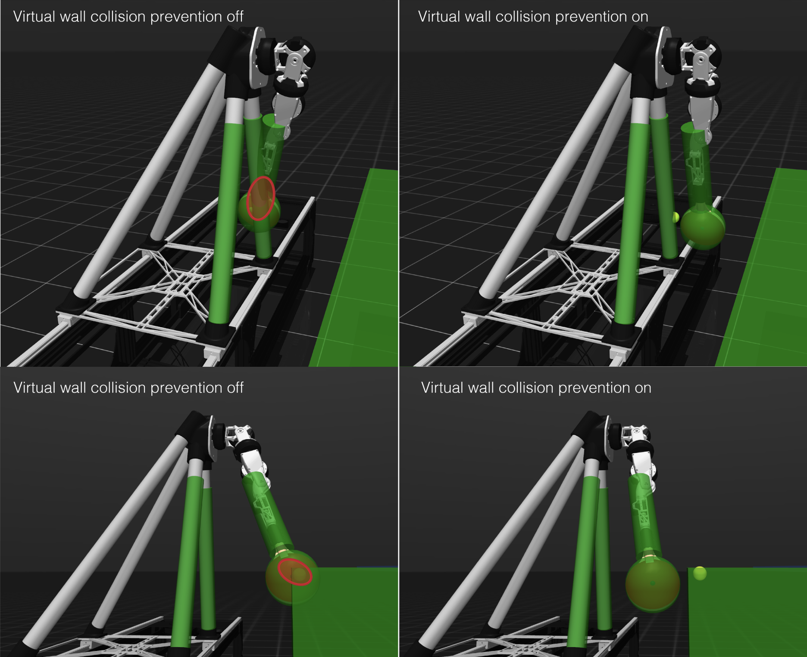

High-Speed Robotic Gantry
Undergraduate research in the MIT Biomimetic Robotics Lab, advised by Prof. Sangbae Kim.
Background
It is an ongoing goal in the robotics community to achieve high level robotic performance in table tennis, an engaging and dynamically complex activity. In the Biomimetic Robotics Lab, I worked with graduate students David Nguyen and Kendrick Cancio to approach this challenge. My initial work on this project covered the design, fabrication, and integration of a high-speed gantry to increase the workspace of a previously statically mounted robotic arm. See also Modular Torque-Dense Wrist Assembly for my subsequent work on designing an upgraded 3-DOF wrist for this same system.
Hardware Design
Preliminary performance simulations in Python (assuming constant 60% motor efficiency, no frictional losses, etc.)
showed that with just one of our lab's U12 motors and a large pulley radius (0.09m), a belt driven
system could fulfill our primary functional requirement: to traverse half the width of the table (0.77m) in under
500 ms. Having validated this general approach, I moved on to more detailed hardware design with an emphasis on modularity,
lightweighting, and a compact overall footprint.
On a high level, the system can be reduced to a series of subassemblies contained in a simple aluminum extrusion base frame, with linear guides mounted
directly into these extrusions. The entire belt drive (including a belt tensioning system, the motor, and two large pulleys) lies
within the footprint of this base frame, while the arm frame subassembly clamps directly to the drive belt.



FEA on the pulley under maximum motor torque output showed microscale deformation and a safety factor (to yield) over 10x—something I intentionally
didn't carve down further to allow for the incorporation of this pulley into future systems in the lab with unknown torque requirements.
Beyond the motor mount subassembly, a mobile arm frame subassembly interfaces with the arm itself. A tube-based
pyramidal design provides high stiffness under the extreme dynamic loads possible during operation,
while minimizing mobile mass to allow for faster linear acceleration along the gantry. Carbon fiber enforced nylon 3D prints
serve as adapters in this structure, fixed to the tubes with toughened epoxy.

Note that 4-way rotational symmetry of the mounting elements in the base plate and these adapters allows the arm to be mounted with its shoulder plane either parallel or perpendicular to the edge of the table, allowing for experimentation with different swing types.



Control & Integration
Following the design and assembly of the necessary hardware components for this gantry, I moved on to some work on control and integration with the existing arm platform (formerly statically mounted to a table at its shoulder). A critical feature was a robust homing protocol to orient the system in space. I used a sensorless homing approach in which a spike in the motor's current draw is used as a cue for collision with the system's hard stops. Written in C++, this low-level homing program smooths current measurements to prevent false positive triggers. A 2-pass contact at each hard stop with variable speed of approach helps balance speed and precision, and soft stops for the gantry are set at the conclusion of homing.

Due to the high operating speeds of this system, it's also critical to have a level of control preventing collisions
of the system both with itself and its environment. I wrote a virtual wall based controller with CasADi (in this case,
used exclusively for its algorithmic differentiation capabilities), which allows it to be exported and
utilized at a low level in the hardware controller.
This controller applies a virtual repulsive force collinear to the line segment representing the shortest distance between
any two collision geometries that have violated a certain buffer
distance. Visualization of the impact of the virtual wall is shown to the left. Note that the small yellow ball visible outside
the sphere enclosing the paddle in the right column of images represents the commanded position of the paddle center in
the absence of the virtual wall torque. In the left column of images, this commanded position simply aligns with the center
of the paddle throughout the trajectory.
Acknowledgements
An enormous thank you to David Nguyen for providing incredible mentorship and support on this project. Thank you as well to Prof. Sangbae Kim for sharing valuable insights on system-level design, and to Se Hwan Jeon, Andrew SaLoutos, and David Kim for being so generous with their time and knowledge!